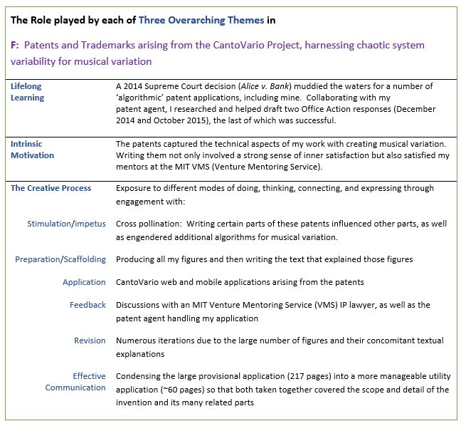

The following Intellectual Property (IP) arose from my work developing the CantoVario Projects. This interdisciplinary work harnesses chaotic system variability to produce musical variation. In wearing an engineer’s hat capped by a musician's, I devised engines for making musical variations of original works. Based on a natural mechanism for variability found in dissipative chaotic systems, i.e., the sensitivity of their solutions to initial conditions, these engines typically employ two chaotic trajectories that map the events of a musical work into a variation based on the original piece. The variations can be close to the original, diverge from it substantially, or achieve degrees of variability between these two extremes. The technique can serve as an idea generator or as a springboard for a dynamic music where a work changes from one hearing to the next—not in random ways—but rather by musical choice. The technique does not generate music or any other kind of data as random events; rather, it creates a rich set of variations on an already completed piece or sequence of symbols.
Despite its ability to produce variations that can be delightful—appealing to musicians and non-musicians alike—the original chaotic mapping of my earlier IP and papers had limitations. For instance, it only encompassed one algorithm, whereas the “improved chaotic mapping” described in my 2016 patents offers multiple variation techniques, and uses them to generate variations not only of a discrete-time signal representation of a source piece, e.g., MIDI file scores, prose, poetry, etc., but also variations of continuous-time signal representations of a work, e.g., audio recording, film, video, spoken word art, video games, and so on.
The patent applications (granted and pending) listed in the accompanying curriculum vitae cover my algorithms for generating musical variation. Together they underpin the MIDI and audio sides of applications I’ve developed—known collectively as “CantoVario.” My 2010 Provisional, 2011 Utility, and 2012 Preliminary Amendment patent applications were issued by the USPTO (United States Patent and Trademark Office) in March 2016. On the advice of my team at the MIT Venture Mentoring Service (VMS), I filed trademark applications to register the marks “CantoVario” and “EnginArt” with the USPTO (granted 2014 and 2015, respectively), as well as the 2014 Continuation in Part (granted 2016).
A utility patent awarded in June 2020 covers variation algorithms that produce the mash-ups currently on www.cantovario.com. They're based on a breakthrough idea that occurred to me one morning in June 2017, enabling complete mashups of songs, so that the mashups themselves constitute fully formed songs. N.B: A mashup is a form of musical variation; e.g., J.S. Bach wrote a mashup for the 30th variation of his Goldberg Variations.
The CantoVario projects are discussed to a greater extent in "CantoVario".
View my recent patents issued by the USPTO.
In sum, the patents (and trademarks) arising from the CantoVario Projects show work recognized by the National Science Foundation (NSF), the MIT Venture Mentoring Service (VMS), the USPTO, the journal Science, and most recently a 2024-25 Harvard Radcliffe Fellowship. Like the Science article, they fuse the disciplines of music and engineering. The thematic table below captures the role played by each of my three overarching themes (lifelong learning, intrinsic motivation, the creative process) in devising and writing these patents.
